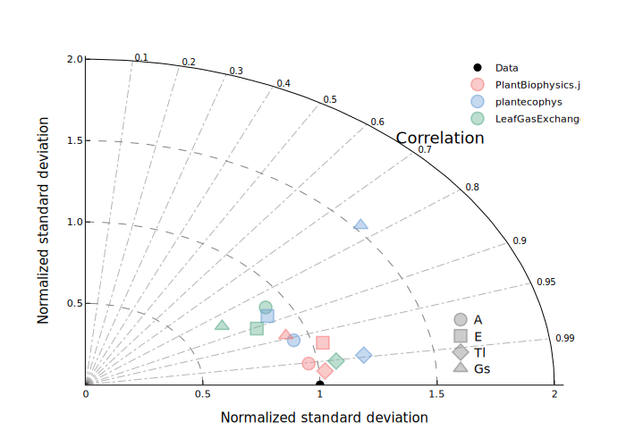
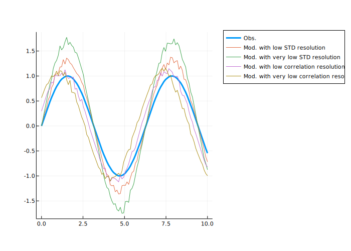
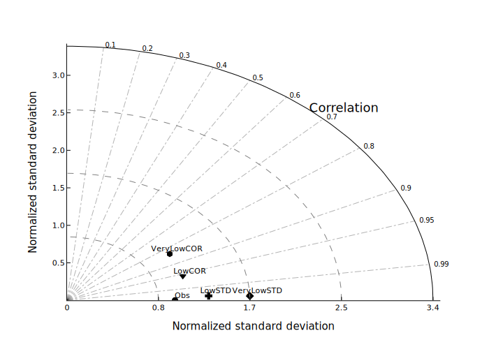

using Pkg
Pkg.activate(".") Activating project at `~/Documents/Codes_divers/PlantBiophysics-paper-Quarto/notebooks/evaluation/Fig4` Activating project at `~/Documents/Codes_divers/PlantBiophysics-paper-Quarto/notebooks/evaluation/Fig4`This Pluto notebook presents the computation of Fig. 4 from the scientific article. The notebook computes a Taylor diagram using results computed and stored in non-Pluto script available here.
begin
using Plots, CSV, DataFrames, Colors, Measures, TaylorDiag, PlotlyJS
using PlantBiophysics
plotlyjs()
end
The WebIO Jupyter extension was not detected. See the WebIO Jupyter integration documentation for more information.
Plots.PlotlyJSBackend()| Row | Date | variable | simulated | origin | Cₐ | measured |
|---|---|---|---|---|---|---|
| DateTime | String3 | Float64 | String31 | Float64 | Float64 | |
| 1 | 2001-11-14T09:38:00 | A | 9.54724 | PlantBiophysics.jl | 188.35 | 10.5883 |
| 2 | 2001-11-14T09:48:00 | A | 19.2821 | PlantBiophysics.jl | 374.267 | 21.7167 |
| 3 | 2001-11-14T09:50:00 | A | 30.654 | PlantBiophysics.jl | 760.9 | 33.0167 |
| 4 | 2001-11-14T09:52:00 | A | 32.235 | PlantBiophysics.jl | 955.4 | 34.8167 |
| 5 | 2001-11-14T09:54:00 | A | 33.4133 | PlantBiophysics.jl | 1155.4 | 36.85 |
| 6 | 2001-11-14T09:56:00 | A | 29.3508 | PlantBiophysics.jl | 1157.62 | 32.15 |
| 7 | 2001-11-14T09:58:00 | A | 20.3233 | PlantBiophysics.jl | 1168.7 | 23.9833 |
| 8 | 2001-11-14T10:00:00 | A | 9.77645 | PlantBiophysics.jl | 1184.58 | 10.7583 |
| 9 | 2001-11-14T10:02:00 | A | 5.16737 | PlantBiophysics.jl | 1195.37 | 6.26167 |
| 10 | 2001-11-14T10:04:00 | A | 2.59479 | PlantBiophysics.jl | 1197.85 | 2.07667 |
| 11 | 2001-11-14T11:11:00 | A | 13.1042 | PlantBiophysics.jl | 344.033 | 12.25 |
| 12 | 2001-11-14T11:14:00 | A | 6.99337 | PlantBiophysics.jl | 192.333 | 6.88667 |
| 13 | 2001-11-14T11:27:00 | A | 14.3901 | PlantBiophysics.jl | 379.667 | 15.1667 |
| ⋮ | ⋮ | ⋮ | ⋮ | ⋮ | ⋮ | ⋮ |
| 6673 | 2002-05-10T14:34:00 | Gs | 0.32596 | plantecophys | 340.871 | 0.210828 |
| 6674 | 2002-05-10T14:37:00 | Gs | 0.418032 | plantecophys | 190.586 | 0.20828 |
| 6675 | 2002-05-10T14:49:00 | Gs | 0.303058 | plantecophys | 379.248 | 0.165605 |
| 6676 | 2002-05-10T14:51:00 | Gs | 0.198457 | plantecophys | 772.614 | 0.157962 |
| 6677 | 2002-05-10T14:54:00 | Gs | 0.175361 | plantecophys | 968.895 | 0.149045 |
| 6678 | 2002-05-10T14:56:00 | Gs | 0.159159 | plantecophys | 1170.17 | 0.136306 |
| 6679 | 2002-05-10T14:58:00 | Gs | 0.15877 | plantecophys | 1176.07 | 0.117834 |
| 6680 | 2002-05-10T15:00:00 | Gs | 0.148055 | plantecophys | 1178.16 | 0.101911 |
| 6681 | 2002-05-10T15:03:00 | Gs | 0.118704 | plantecophys | 1187.72 | 0.088535 |
| 6682 | 2002-05-10T15:06:00 | Gs | 0.102397 | plantecophys | 1194.74 | 0.0732484 |
| 6683 | 2002-05-10T15:10:00 | Gs | 0.0927416 | plantecophys | 1196.88 | 0.0579618 |
| 6684 | 2002-05-10T15:12:00 | Gs | 0.0819242 | plantecophys | 1199.09 | 0.0471338 |
In order to display a Taylor diagram, we need two statistics: - standard deviation (i.e. “amplitude” of evaluated data); - correlation (i.e. pattern similarity between two datasets).
Standard deviations are normalized in order to represent all variables (\(A\), \(E\), \(T_l\), \(G_s\)) on the same diagram.
begin
VARS = ["A", "E", "Tl", "Gs"]
Ss = zeros((4, 3))
Cs = zeros((4, 3))
for i in eachindex(VARS)
var = VARS[i]
# Loading observations and simulations for all three packages
obs = filter(x -> (cmp.(x.variable, var) == 0) & (cmp.(x.origin, "PlantBiophysics.jl") == 0), df_res).measured
modPB = filter(x -> (cmp.(x.variable, var) == 0) & (cmp.(x.origin, "PlantBiophysics.jl") == 0), df_res).simulated
modPE = filter(x -> (cmp.(x.variable, var) == 0) & (cmp.(x.origin, "plantecophys") == 0), df_res).simulated
modLG = filter(x -> (cmp.(x.variable, var) == 0) & (cmp.(x.origin, "LeafGasExchange.jl") == 0), df_res).simulated
# Computing standard deviations
S = [STD(modPB), STD(modPE), STD(modLG)]
S = [S[i] / STD(obs) for i in eachindex(S)] # Normalization
Ss[i, :] = S
# Computing correlations
C = [COR(obs, modPB), COR(obs, modPE), COR(obs, modLG)]
Cs[i, :] = C
end
end
"""
rgb(r, g, b, a)
Like `Colors.RGBA` but accepts colors in the 0-255 range.
"""
function rgb(r, g, b, a)
return RGBA(r / 255, g / 255, b / 255, a)
end
rgbbegin
# Colors for each package
col_pb = (244, 124, 124) # PlantBiophysics.jl
col_lg = (93, 174, 139) # LeafGasExchange.jl
col_pe = (112, 161, 215) # plantecophys
transparency_col = 0.6 # Transparency for edges
transparency_fill = 0.4 # Transparency for fill
color_pb = rgb(col_pb..., transparency_col)
color_pe = rgb(col_lg..., transparency_col)
color_lg = rgb(col_pe..., transparency_col)
fill_pb = rgb(col_pb..., transparency_fill)
fill_pe = rgb(col_lg..., transparency_fill)
fill_lg = rgb(col_pe..., transparency_fill)
cols = [fill_pb, fill_lg, fill_pe]
strkcols = [color_pb, color_lg, color_pe]
# Parameters for fitting
msize = 7 # Marker size
stw = 1.5
legend_lab_size = 10
xleg = 1.6 # x-position for variables legend
yleg = 0.4 # y-position for variables legend
nms = ["PlantBiophysics.jl", "plantecophys", "LeafGasExchange.jl"]
end
3-element Vector{String}:
"PlantBiophysics.jl"
"plantecophys"
"LeafGasExchange.jl"Using the same Taylor diagram for all the data is correct thanks to STD normalization.
begin
# Plotting initial Taylor diagram
fig = taylordiagram([1], [1], [""], normalize=true, ang=pi / 2, rmsd_circ=false, figsize=600)
# Adding data label
Plots.scatter!([1], [0], label="Data", markerstrokecolor=:black, markercolor=:black)
plot!(size=(600, 600))
mks = [:circle, :rect, :diamond, :utriangle]
for n in eachindex(mks)
rho = Ss[n, :]
theta = to_polar(Cs[n, :])
for i in 1:length(theta)
if n == 1
lab = nms[i]
else
lab = ""
end
Plots.scatter!([cos.(theta[i]) .* rho[i]], [sin.(theta[i]) .* rho[i]], markerstrokecolor=strkcols[i], markercolor=cols[i], markershape=mks[n], markersize=msize, markerstrokewidth=stw, label=lab)
end
plot!(fontfamily="NotoSans-Regular.ttf", fontsize=12)
scatter!([xleg], [yleg - 0.1 * (n - 1)], markerstrokecolor=:grey, markercolor=:grey, markershape=mks[n], markersize=msize, markerstrokewidth=stw, markerstrokealpha=0.6, markeralpha=0.4, label="")
annotate!(xleg + 0.05, yleg - 0.1 * (n - 1) - 0.005, text(string(VARS[n]), :left, legend_lab_size))
end
plot!(legend=:topright, foreground_color_legend=nothing)
end

Taylor diagrams are tools invented and published in the 90s-00s allowing better visualisation of model realism evaluation. Via a clever use of relationship between RMSE, standard deviation and correlation, the Taylor diagram illustrates the accuracy of a model in polar coordinates.
Here, the \(\rho\) axis represents normalized standard deviation. 1 is the normalized standard deviation of observed data. If a modeled data point is higher (lower) than 1, it means that model induces higher (lower) standard deviation than observed data. For example, green diamond here has a more realistic standard deviation than blue diamond, i.e. blue diamond data tends to have exaggerated amplitudes with respect to data.
The \(\theta\) axis represents correlation, i.e. the pattern similarity between observed and modeled data. Two datasets may have similar standard deviation but very different correlations (for instance if a dataset is highly dephased).
begin
Lx = 100
x = range(0, 10, Lx)
obs = sin.(x)
mod_lowSTD = 1.2 * sin.(x) + sin.(x) .* rand(Lx) * 0.2
mod_verylowSTD = 1.6 * sin.(x) + sin.(x) .* rand(Lx) * 0.2
mod_lowCOR = sin.(x .+ 0.3) .+ sin.(x) .* rand(Lx) * 0.2
mod_verylowCOR = sin.(x .+ 0.6) .+ sin.(x) .* rand(Lx) * 0.2
Plots.plot(x, obs, label="Obs.", linewidth=3)
plot!(x, mod_lowSTD, label="Mod. with low STD resolution")
plot!(x, mod_verylowSTD, label="Mod. with very low STD resolution")
plot!(x, mod_lowCOR, label="Mod. with low correlation resolution")
plot!(x, mod_verylowCOR, label="Mod. with very low correlation resolution")
plot!(legend=:outertopright)
plot!(size=(650, 400))
end

Here, we represent 5 datasets: - Obs is the target dataset, a sinusoide. - Mod. with low STD resolution the same than ‘Obs’ but with noise and amplified amplitude. - Mod. with very low STD resolution the same than ‘Obs’ but with noise and even more amplified amplitude. - Mod. with low correlation resolution the same than ‘Obs’ but with noise and shifted. - Mod. with very low correlation resolution the same than ‘Obs’ but with noise and even more shifted.
Each “modeled” dataset is designed to illustrate behaviours on the Taylor diagram presented below.
begin
nmes = ["Obs", "LowSTD", "VeryLowSTD", "LowCOR", "VeryLowCOR"]
S = [STD(obs), STD(mod_lowSTD), STD(mod_verylowSTD), STD(mod_lowCOR), STD(mod_verylowCOR)]
S = S / STD(obs)
C = [COR(obs, obs), COR(obs, mod_lowSTD), COR(obs, mod_verylowSTD), COR(obs, mod_lowCOR), COR(obs, mod_verylowCOR)]
p = taylordiagram(S, C, nmes, rmsd_circ=false, normalize=true)
end

As expected, the Taylor diagram highlights the main failures of the datasets. The low and very low STD resolution ones have good correlation coefficients (near the \(y=0\) axis) but are far away from the Obs point for standard deviation (distant from the center). The low and very low COR resolution ones have similar distance from center than the Obs point but move away from the \(y=0\) axis (lower correlation coefficients).